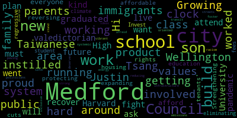

[Tseng]: Hi, I'm Justin Tsang. I'm the son of Taiwanese immigrants and I'm running for Medford City Council. Growing up in the working-class Wellington area, my parents worked around the clock to build a family. They instilled in me the values of hard work and getting involved. As a proud son of Medford and the product of the public school system, I graduated valedictorian of Medford High School and went on to attend Harvard University. As we recover from this pandemic, we must ask ourselves, what kind of Medford do we want to live in? My plan will fight for a future that works for everyone. Build a Medford we can afford by protecting tenants' rights and expanding affordable housing. Strengthening our schools by reversing education cuts and eliminating regressive student fees. Invest in climate and infrastructure by reducing emissions and paving safer, transit-oriented streets. And foster an inclusive city where politicians aren't afraid to stand up to systemic racism. A city as vibrant as Medford deserves a strong, diverse city council with new energy and new ideas.
|
total time: 0.89 minutes total words: 177  |
|||
{kind=link}